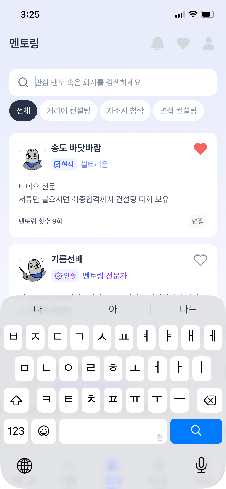

두 번째 실험 · 2026.09.10 · 디맨드 · 사용자 긍정 평가
디맨드도, 설명만으로 만들면
이번에는 멘토 검색 화면이에요.
원본을 보지 않은 구현 담당에게 요소·관계·색·상태를 글로 전달했어요.
원본과 조립 화면
디맨드 · UIbowl 출처 · 같은 표시 폭390px. 원래 CSS 크기와 DPR은 미상이에요.

E1 · 화면 제목과 전역 도구
제목은 왼쪽, 연한 도구 세 개는 오른쪽에 모여 있어요.
실제 입력 프롬프트 펼치기
이 설명과 공유·조립 계약 P1을 함께 전달했어요. 식별 영역의 높이는 P2, 독립 표본의 가용 폭은 P3로 보완했어요.
## E1 — 화면 제목과 상단 도구 역할: 멘토링 화면 식별과 상단 전역 기능 위치. 전체 높이54px. 제목 '멘토링'은 왼쪽16px, 세로 중심 y26px. 오른쪽에는 bell/heart/user-round 순서로24px 아이콘3개, 간격20px. 마지막 아이콘 오른쪽20px. 표시는 흐린 회색#d4dade. 원본에서 실루엣 채움으로 보이며 도구 라이브러리의 윤곽선을 과하게 검정으로 만들지 않는다. 제공된 공식SVG를 사용하고 필요한 filled 변형을 선택한다. 외부 윤곽 좌표를 직접 새로 그리지 않는다. 정적 표본에서 알림/찜/내 정보는 상태를 표현하는 비상호작용 아이콘이며 접근 가능한 설명을 둔다. 실제 이동·비활성 조건은 unknown. 헤더 아래 선이 없고 제목과 검색창 사이에 넓은 공백이 있다.
E2 · 검색 입력
흰 입력 표면 안에 검색 아이콘과 텍스트가 함께 있어요. 입력과 삭제를 직접 해볼 수 있어요.
실제 입력 프롬프트 펼치기
이 설명과 공유·조립 계약 P1을 함께 전달했어요. 식별 영역의 높이는 P2, 독립 표본의 가용 폭은 P3로 보완했어요.
## E2 — 검색 입력 역할: 멘토나 회사를 찾는 입력. 헤더 아래16px 후 배치; 화면 기준 x16,y70,폭358,높이46px. 흰 배경,반경12px,외곽선/그림자 없음. 왼쪽16px 여유 다음 search 아이콘20px, 그 뒤12px 간격과 실제 input이 남은 폭을 차지한다. 입력문구 '관심 멘토 혹은 회사를 검색하세요',14px/22px/400,흐린 회색. input min-width0,기본 내부 padding0,흰 배경,border0. 검색 아이콘은#747e8c 윤곽선. 이미지에는 입력 커서가 보이지만 실제 OS 키보드를 재현하지 않는다. 이번 표본은 네이티브 input에 글자를 입력/지울 수 있고 submit은 연결하지 않는다. 자동 focus는 하지 않는다. 실제 focus에는 레이아웃을 바꾸지 않는 inset 경계 하나를 검색 래퍼가 소유하고 내부 input outline과 중복하지 않는다. forced-colors에서도 한 곳의 포커스를 보존한다. 입력 포커스/hover는 원본에서 관찰하지 않은 새 구현 선택이며150ms색전환, reduced-motion에서는 즉시 표시.
E3 · 필터 선택 상태
전체만 짙게 선택됐어요. 필터는 내용에 맞는 작은 폭을 사용해요.
실제 입력 프롬프트 펼치기
이 설명과 공유·조립 계약 P1을 함께 전달했어요. 식별 영역의 높이는 P2, 독립 표본의 가용 폭은 P3로 보완했어요.
## E3 — 작은 필터 선택군 E2 아래8px. '전체'/'커리어 컨설팅'/'자소서 첨삭'/'면접 컨설팅',순서대로 한줄. 내용폭에 맞는 pill,높이36px,좌우12px,간격4px,반경18px. '전체'는#283548 배경+흰 글자; 나머지는 흰 배경+흐린회색 글자. 모두14px/22px/400. 외곽선 없음. 넓은 CTA 버튼으로 똑같은 폭을 주지 않는다.320에서 이 줄이 넘치면 자연스럽게 다음줄로 감싸되 순서·내용·상태를 유지한다. 정적 선택 상태를 보여주는 요소로 구현한다. 탭 클릭으로 실제 결과가 바뀐다고 약속하지 않는다. 선택군의 접근 가능한 이름과 '전체 선택됨' 상태 설명을 제공한다.
E4 · 멘토 식별 · 현직과 찜
아바타 옆에는 이름·자격·소속, 카드 오른쪽에는 별도의 찜 상태가 있어요.
실제 입력 프롬프트 펼치기
이 설명과 공유·조립 계약 P1을 함께 전달했어요. 식별 영역의 높이는 P2, 독립 표본의 가용 폭은 P3로 보완했어요.
## E4 — 멘토 카드의 식별 영역과 두 상태 카드는 필터 아래20px, x16,y180,폭358,첫 카드 높이180px(min-height),흰 배경,반경14px,경계·그림자 없음. 표면이 배경과 구별된다. 카드 내부 padding16px. 의미 있는 article/목록 구조로 작성한다. 상단식별묶음은48px높이 아바타 →8px간격 → 이름/자격·소속 묶음. 아바타48×48px,원형 그림의 제공에셋 그대로 사용하며 추상 이모지나 임의 캐릭터로 대체하지 않는다. 카드 내 왼쪽0px부터. 이름 시작은 화면x88px. 텍스트열 min-width0,이름18px/24px/700. 이름 아래8px 후 메타행22px: 아주 연한 파란 pill배경#f0f3ff 안에 자격아이콘14px+글자,그 뒤8px+소속. 메타 글자14px/20px. 배지는 사방2px/6px/2px/6px,반경6px. 아바타와 이름/메타열의 위쪽이 나란하다. 찜 하트는 카드 우측16px에서24×24px,카드 상단16px에 놓는다. 이름줄 끝에 포함해 텍스트를 밀지 말고 카드 우측 도구 슬롯으로 분리한다. 이름이 길어지면 그 슬롯을 침범하지 않고 줄바꿈. 독립 카드에서 header 오른쪽과 별개인 항목 범위다. 첫 카드: avatar-1.png. 이름 '송도 바닷바람'. 배지 '현직'과 bookmark-check 윤곽아이콘은#4f73ff. 소속 '셀트리온'은#7d8cff. 하트는#fa6268로 채운상태,원본의 붉은찜 강조를 유지. 단순 장식 색상이라며 회색으로 바꾸지 않는다. 둘째 카드: avatar-2.png. 이름 '기름선배'. 배지 '인증'과 badge-check 아이콘,소속 '멘토링 전문가'는#8250ff. 하트는 내부흰색/회색#9099a5 윤곽선,선두께2px. 같은 상단구조·간격·아바타크기,상태에 따른 색/아이콘 차이만 둔다. 두 하트는 실제 찜API가 연결되지 않은 상태 표본으로 '찜한 멘토'/'찜하지 않은 멘토'를 접근 가능한 설명으로 제공한다.
E4-certified · 멘토 식별 · 인증과 미선택
같은 구조에서 자격의 색·아이콘과 하트의 채움 상태가 달라져요.
실제 입력 프롬프트 펼치기
이 설명과 공유·조립 계약 P1을 함께 전달했어요. 식별 영역의 높이는 P2, 독립 표본의 가용 폭은 P3로 보완했어요.
## E4 — 멘토 카드의 식별 영역과 두 상태 카드는 필터 아래20px, x16,y180,폭358,첫 카드 높이180px(min-height),흰 배경,반경14px,경계·그림자 없음. 표면이 배경과 구별된다. 카드 내부 padding16px. 의미 있는 article/목록 구조로 작성한다. 상단식별묶음은48px높이 아바타 →8px간격 → 이름/자격·소속 묶음. 아바타48×48px,원형 그림의 제공에셋 그대로 사용하며 추상 이모지나 임의 캐릭터로 대체하지 않는다. 카드 내 왼쪽0px부터. 이름 시작은 화면x88px. 텍스트열 min-width0,이름18px/24px/700. 이름 아래8px 후 메타행22px: 아주 연한 파란 pill배경#f0f3ff 안에 자격아이콘14px+글자,그 뒤8px+소속. 메타 글자14px/20px. 배지는 사방2px/6px/2px/6px,반경6px. 아바타와 이름/메타열의 위쪽이 나란하다. 찜 하트는 카드 우측16px에서24×24px,카드 상단16px에 놓는다. 이름줄 끝에 포함해 텍스트를 밀지 말고 카드 우측 도구 슬롯으로 분리한다. 이름이 길어지면 그 슬롯을 침범하지 않고 줄바꿈. 독립 카드에서 header 오른쪽과 별개인 항목 범위다. 첫 카드: avatar-1.png. 이름 '송도 바닷바람'. 배지 '현직'과 bookmark-check 윤곽아이콘은#4f73ff. 소속 '셀트리온'은#7d8cff. 하트는#fa6268로 채운상태,원본의 붉은찜 강조를 유지. 단순 장식 색상이라며 회색으로 바꾸지 않는다. 둘째 카드: avatar-2.png. 이름 '기름선배'. 배지 '인증'과 badge-check 아이콘,소속 '멘토링 전문가'는#8250ff. 하트는 내부흰색/회색#9099a5 윤곽선,선두께2px. 같은 상단구조·간격·아바타크기,상태에 따른 색/아이콘 차이만 둔다. 두 하트는 실제 찜API가 연결되지 않은 상태 표본으로 '찜한 멘토'/'찜하지 않은 멘토'를 접근 가능한 설명으로 제공한다.
E5 · 설명과 상담 이력
설명은 아바타의 왼쪽 기준으로 돌아오고, 상담 횟수와 분야는 하단 양끝에 놓여요.
실제 입력 프롬프트 펼치기
이 설명과 공유·조립 계약 P1을 함께 전달했어요. 식별 영역의 높이는 P2, 독립 표본의 가용 폭은 P3로 보완했어요.
## E5 — 카드 설명과 하단 정보 첫 카드에서 E4 상단48px 묶음 다음20px 간격. 왼쪽은 카드내부16px,아바타가 아니라 카드내용의 왼쪽 기준으로 다시 시작한다. 설명은 '바이오 전문' 그리고 다음줄 '서류만 붙으시면 최종합격까지 컨설팅 노하우 보유'. 보조색#626c7a,14px/22px. 두번째 문장은390폭에서 한줄이 목표지만 글자하한/서체 때문에 필요하면 줄바꿈을 허용하고 카드높이를 늘린다. 마지막 글자를 자르거나14px 아래로 줄이지 않는다. 설명 다음14px 후 footer22px높이: 왼쪽 '멘토링 횟수 9회'14px/22px/500,오른쪽 '면접'14px/22px,연회색#f8f9fb의 작은배지. 배지는 좌우6px,반경6px. footer의 두끝은 카드내부 좌우16px와 일치한다. 가로 구분선은 없고 간격으로 설명과 이력을 구별한다. 전문분야 문구와 횟수/면접배지의 역할을 섞지 않는다. 두번째 카드는 첫 카드 아래12px,x16,y372. 원본 키보드가 y460.33 이후를 가리므로 E4식별영역과 그 주변 흰표면까지만 표현한다. 숨은설명/횟수/분야는unknown,생성하지 않는다. 보이는 상단양쪽반경·카드양옆과 배경관계는 반드시 유지한다. 관찰영역 아래에 가짜 카드하단 경계선을 그리지 않는다.
이번 화면에서 다른 부분을 알려주세요
“E4에서 이름과 배지가 더 가까워야 해”처럼 요소나 위치로 말씀해주시면 돼요. 수정 프롬프트와 다시 만든 화면을 같은 기록에 이어가겠습니다.